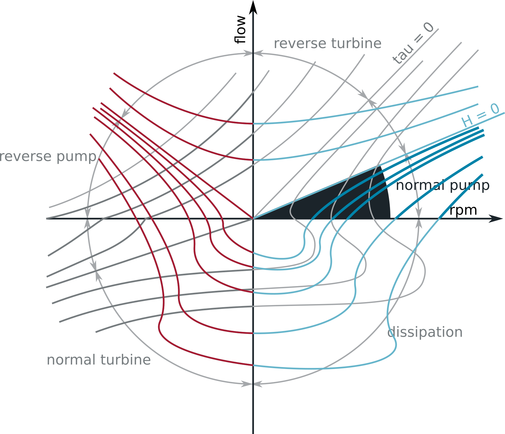
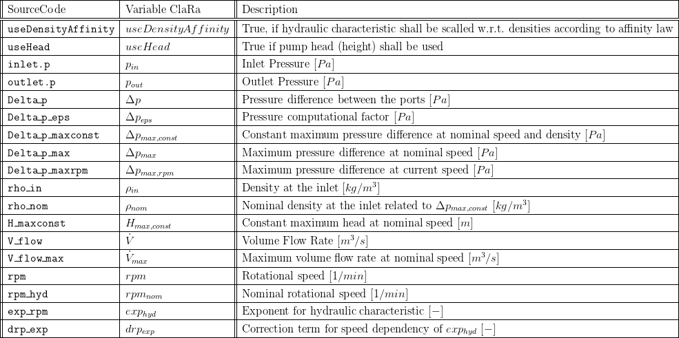
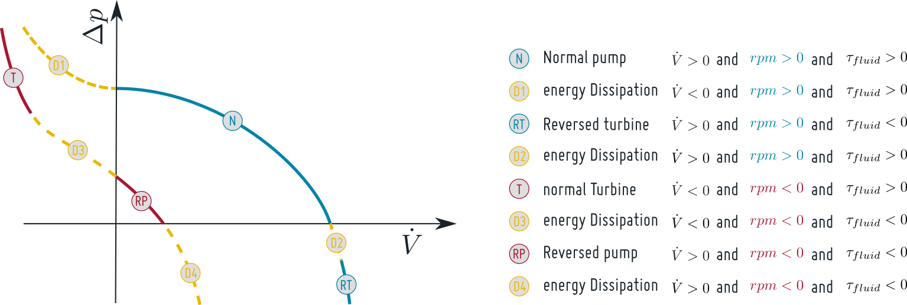
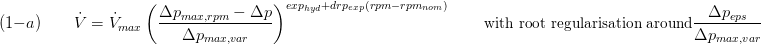
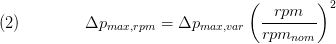
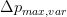
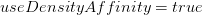
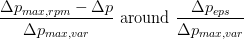
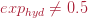

MetaStable Q12
Created Mittwoch 06 Dezember 2017
This model represents well the hydraulics of typical pumps of the power plant industry. It gives reasonable results in off-design operation points.
1. Purpose of Model
Representation of normal operation mode of a pump and qualitative analysis of operation in off-design points.
2. Level of Detail, Physical Effects Considered and Physical Insight
2.1 Level of Detail
Referring to Brunnemann et al. [1], this model can be applied in models of level of detail L1 and L2.
2.2 Physical Effects Considered
The model is purely phenomenological.
3. Limits of Validity
- rotation speed > 0
- model can be parameterised to give good accuracy for normal pump operation
- representation of characteristics for reverse turbine operation and dissipation is qualitatively correct

4. Interfaces
5. Nomenclature

6. Governing Equations
According to [2] and [3] four different operation modes can be distinguished, see figure below: Operation mode (N) represents the normal operation of the pump, i.e. the device pumps a positive flow rate at design sense of rotation. Note that in case the pressure difference has changed its sign (i.e. the inlet pressure exceeds the outlet pressure) the pump sort of boost the natural flow and can feed back power to the grid (depending on losses) which is referred to as reversed turbine mode (RT). The second operation mode (D) is encountered when the pressure difference exceeds the maximum pressure difference of the pump at the current speed. In this case either the pump's speed is too small or the pump is under-sized and energy dissipation occurs.
When the sens of rotation is reversed, the device can be either in reversed pump mode (RP) or in turbine mode (T) which is not featured in this model.

a) Normal operation
The characteristic field of the pump is usually modelled applying a simple polynomial approach. In order to allow a more precise fitting to the pump's characteristic field a modified approach is used, see equation 12-a. The characteristic field is defined by two parameters indicating the maximum pressure difference (at zero flow rate) and the maximum volume flow rate (at zero pressure difference) at the nominal rotational speed, see figure below. In order to define the convexity of lines of constant speed the parameters exp_hyd and drp_exp are used. Usually exp_hyd is around 0.5 while drp_exp is a small negative number.



The behaviour of the pump at off-design speeds is assumed to follow a quadratic affinity law:

And  is calculated accordingly:

Note that user shall use  in order to capture property chanage at the inlet which modifies the hydraulic characteristic according to affinity law.
b) Dissipation mode
The dissipation mode occurs when the current pressure difference exceeds the max. available pressure difference at the current speed. Then the flow is reversed and the power from the pump is dissipated. This is implemented in a qualitative way by applying the function SmoothPower from Modelica.Fluid.Dissipation.
The function is linearised for .
Note that the pump model of versions < 1.3.0 showed a quantitatively different behaviour for .
c) Reversed pressure difference and reverse turbine mode
A meaningful behaviour for pressure difference is given by equation (1-a).
Note that the pump model of versions < 1.3.0 showed a qualitatively different behaviour assuming a throttle-like behaviour. This bug was corrected with version 1.3.0.
7. Remarks for Usage
- The behaviour of a pump, especially in non-design operation, is governed by the applying pump model. Consider the respective documentation for details
- The behaviour in dissipation mode and in reverse turbine mode are to be taken as qualitative
8. Validation
The data discussed in [4] represent the characteristic of a small centrifugal pump of a power of approx. 10 kW, a max head of approx. 60 m and a nominal flow of approx 150 m³/h. The data include values for positive speed and zero rotation (rpm = {3100,02500,1900,1100,0 /min}). The comparison of these data with the simulation results prove that an excellent fitting of the pump is possible for normal operation and positive rotation speed. It gives good results for back flow and qualitative correct results for zero rotation (the lowermost line).

Similar results can be obtained when fitting the model to a state-of-the-art feedwater pump for a steam power plant of the 600 MW class, see figure below:

9. References
[1] Johannes Brunnemann and Friedrich Gottelt, Kai Wellner, Ala Renz, André Thüring, Volker Röder, Christoph Hasenbein, Christian Schulze, Gerhard Schmitz, Jörg Eiden: "Status of ClaRaCCS: Modelling and Simulation of Coal-Fired Power Plants with CO2 capture", 9th Modelica Conference, Munich, Germany, 2012
[2] H.Austregesilo, C.Bals, A.Hora, G.Lerchl, P.Romstedt: "ATHLET Mod 2.1 Cycle A - Models and Methods", Documentation provided by the Gesellschaft für Anlagen- und Reaktorsicherheit mbH, July 2006
[3] R.R. Schultz: "RELAP5-3D Code Manual Volume V: User's Guidelines", 2nd Revision. Idaho National Engineering and Environmental Laboratory, July 2002.
[4] R.T. Knapp: "Complete Characteristics of Centrifugal Pumps and Their Use in the Prediction of Transient Behaviour", Transactions of the A.S.M.E. . pp. 683-689, 1937
10. Version History
- 2017-12-07 - v1 - initial implementation derived from the equation previously implemented in the model PumpVLE_L1_affinity - F.Gottelt, XRG Simulation GmbH